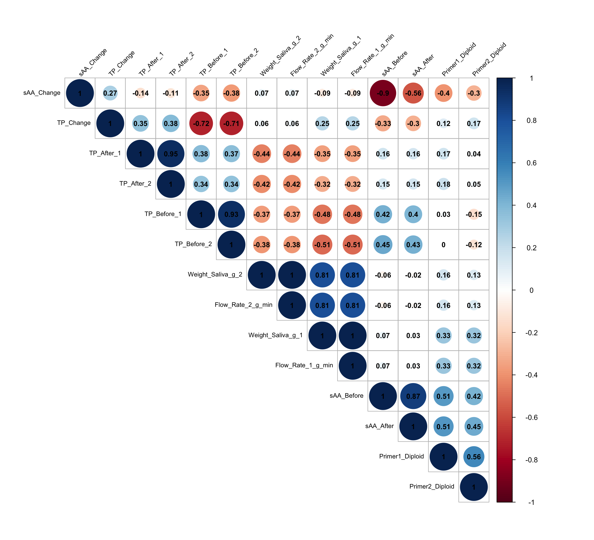
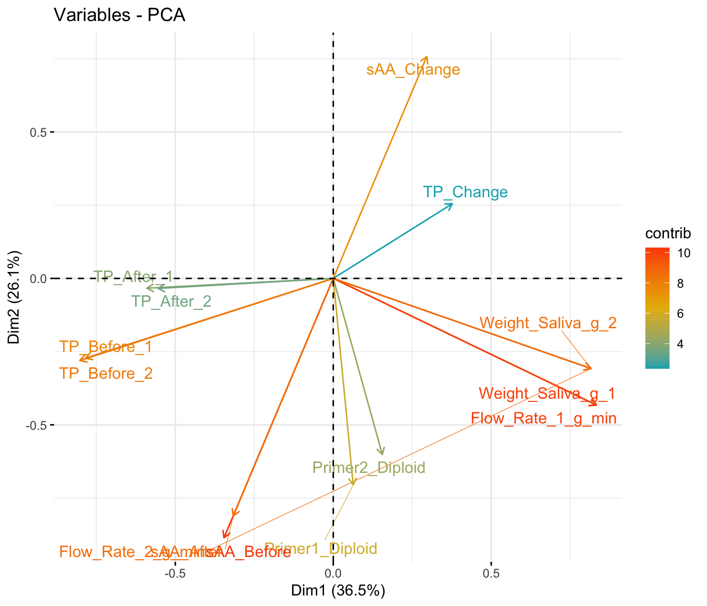
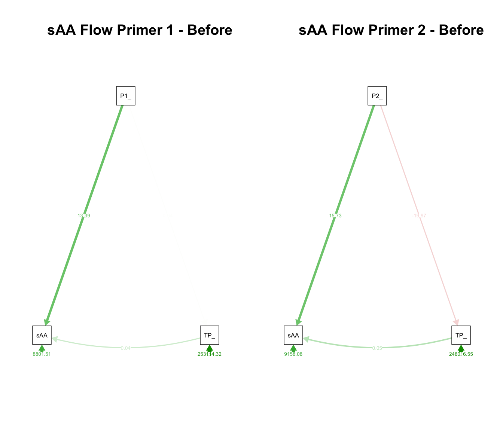
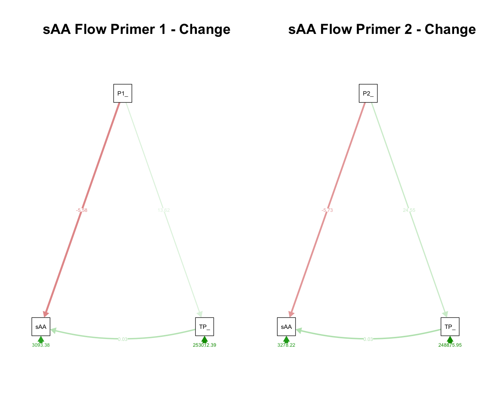
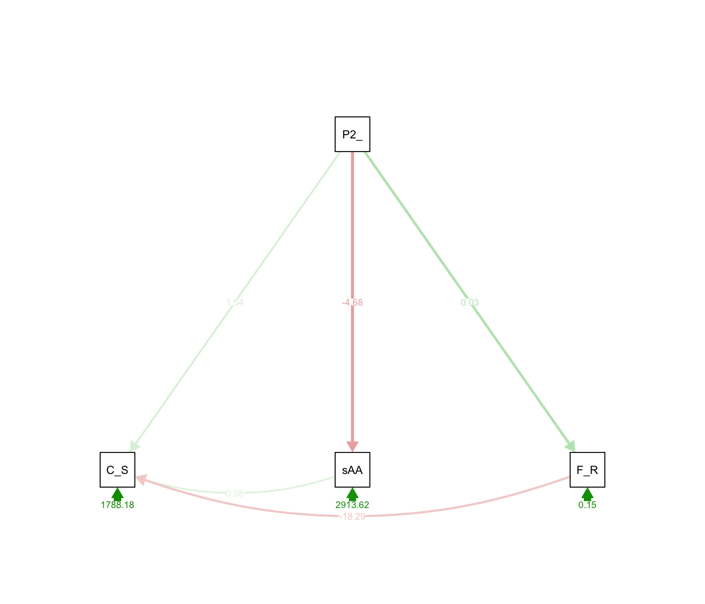
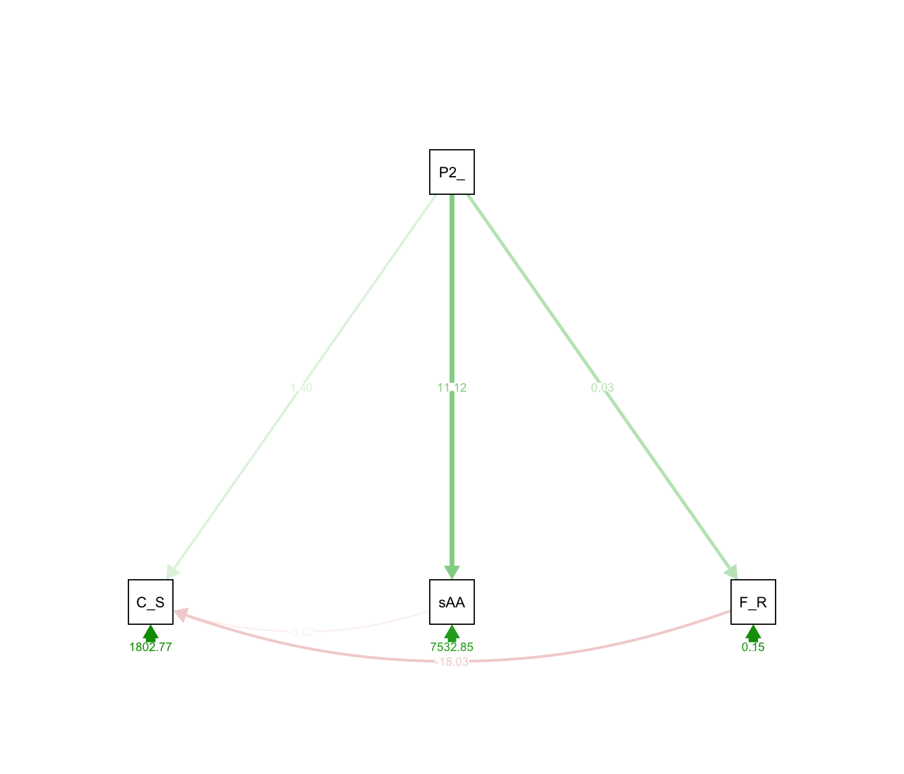
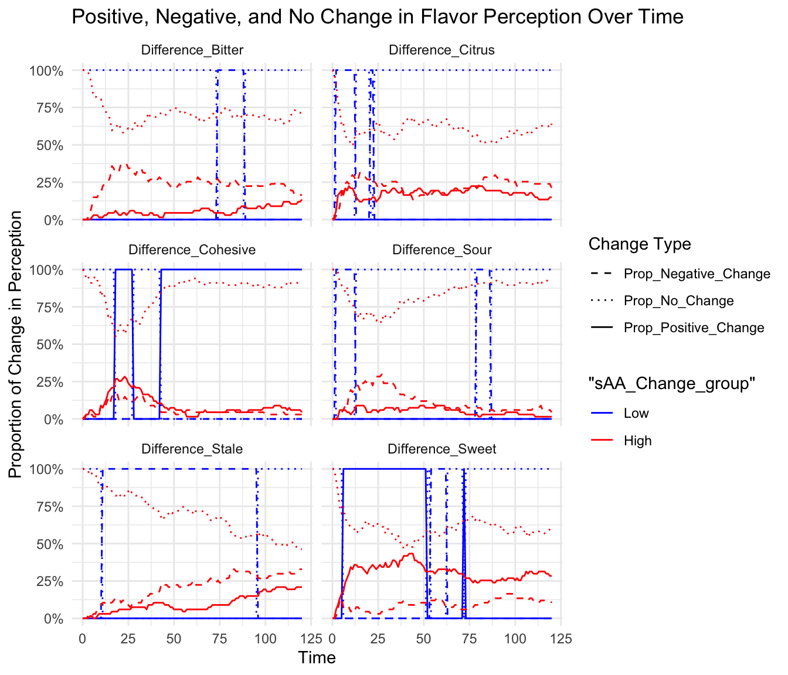
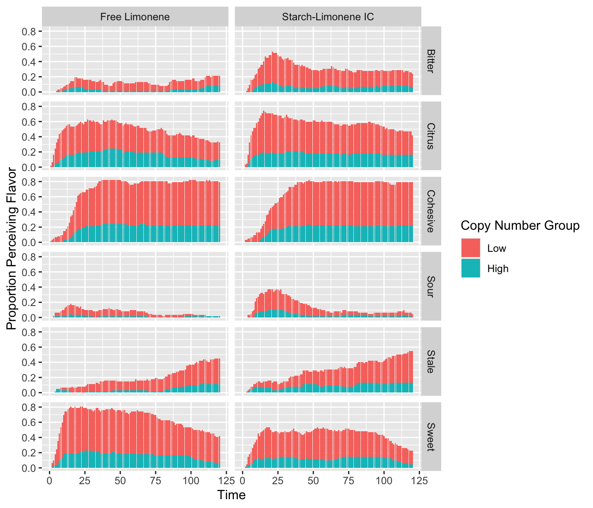

Analysis v2
Tina Lasisi
14 July, 2023
Last updated: 2023-07-14
Checks: 6 1
Knit directory: Goza_AMY_CNV/
This reproducible R Markdown analysis was created with workflowr (version 1.7.0). The Checks tab describes the reproducibility checks that were applied when the results were created. The Past versions tab lists the development history.
The R Markdown file has unstaged changes. To know which version of
the R Markdown file created these results, you’ll want to first commit
it to the Git repo. If you’re still working on the analysis, you can
ignore this warning. When you’re finished, you can run
wflow_publish to commit the R Markdown file and build the
HTML.
Great job! The global environment was empty. Objects defined in the global environment can affect the analysis in your R Markdown file in unknown ways. For reproduciblity it’s best to always run the code in an empty environment.
The command set.seed(20230616) was run prior to running
the code in the R Markdown file. Setting a seed ensures that any results
that rely on randomness, e.g. subsampling or permutations, are
reproducible.
Great job! Recording the operating system, R version, and package versions is critical for reproducibility.
Nice! There were no cached chunks for this analysis, so you can be confident that you successfully produced the results during this run.
Great job! Using relative paths to the files within your workflowr project makes it easier to run your code on other machines.
Great! You are using Git for version control. Tracking code development and connecting the code version to the results is critical for reproducibility.
The results in this page were generated with repository version 170c8ef. See the Past versions tab to see a history of the changes made to the R Markdown and HTML files.
Note that you need to be careful to ensure that all relevant files for
the analysis have been committed to Git prior to generating the results
(you can use wflow_publish or
wflow_git_commit). workflowr only checks the R Markdown
file, but you know if there are other scripts or data files that it
depends on. Below is the status of the Git repository when the results
were generated:
Ignored files:
Ignored: .DS_Store
Ignored: .Rhistory
Ignored: .Rproj.user/
Ignored: data/.DS_Store
Ignored: data/AMY_CNV_data/
Unstaged changes:
Modified: analysis/analysisv2.Rmd
Note that any generated files, e.g. HTML, png, CSS, etc., are not included in this status report because it is ok for generated content to have uncommitted changes.
These are the previous versions of the repository in which changes were
made to the R Markdown (analysis/analysisv2.Rmd) and HTML
(docs/analysisv2.html) files. If you’ve configured a remote
Git repository (see ?wflow_git_remote), click on the
hyperlinks in the table below to view the files as they were in that
past version.
| File | Version | Author | Date | Message |
|---|---|---|---|---|
| Rmd | 170c8ef | Tina Lasisi | 2023-07-14 | Added flavor perception analyses |
| html | 170c8ef | Tina Lasisi | 2023-07-14 | Added flavor perception analyses |
| Rmd | 07ec930 | Tina Lasisi | 2023-07-12 | Publish repo |
| html | 07ec930 | Tina Lasisi | 2023-07-12 | Publish repo |
Clusters
df_saliva <- read_csv("data/df_saliva.csv") %>%
rename(TP_Before_1 = Total_Protein_Before_1_ug_mL,
TP_Before_2 = Total_Protein_Before_2_ug_mL,
TP_After_1 = Total_Protein_After_1_ug_mL,
TP_After_2 = Total_Protein_After_2_ug_mL,
sAA_Before = sAA_Mean_Collection_Before_U_mL,
sAA_After = sAA_Mean_Collection_After_U_mL,
TP_Before = Total_Protein_Before_Mean_ug_mL,
TP_After = Total_Protein_Mean_After_ug_mL)First, we will do a PCA using genetic and protein variables to see if there are any clusters in our dataset.
vars_include <- c("Primer1_Diploid", "Primer2_Diploid", "TP_Before_1", "TP_Before_2", "TP_After_1", "TP_After_2", "TP_Change", "sAA_Before", "sAA_After", "sAA_Change", "Weight_Saliva_g_1", "Weight_Saliva_g_2", "Flow_Rate_1_g_min", "Flow_Rate_2_g_min", "Sample_ID")NA values omitted
We will do the analysis first by omitting na values.
# Scale the Data
df_saliva_scaled <- df_saliva %>%
select(all_of(vars_include)) %>%
select(-Sample_ID) %>%
na.omit() %>%
mutate(across(everything(), ~ as.numeric(.) %>% scale))
# Data unscaled
df_saliva_unscaled <- df_saliva %>%
select(all_of(vars_include)) %>%
select(-"Sample_ID") %>%
na.omit()
# Perform PCA
pca <- df_saliva_scaled %>%
prcomp(center = FALSE, scale. = FALSE)
# Print the summary of the PCA object
summary(pca)Importance of components:
PC1 PC2 PC3 PC4 PC5 PC6 PC7
Standard deviation 2.261 1.9126 1.5220 1.06476 0.80331 0.6382 0.61586
Proportion of Variance 0.365 0.2613 0.1655 0.08098 0.04609 0.0291 0.02709
Cumulative Proportion 0.365 0.6263 0.7918 0.87276 0.91885 0.9479 0.97504
PC8 PC9 PC10 PC11 PC12 PC13
Standard deviation 0.4908 0.25679 0.20650 8.377e-16 3.111e-16 2.272e-16
Proportion of Variance 0.0172 0.00471 0.00305 0.000e+00 0.000e+00 0.000e+00
Cumulative Proportion 0.9922 0.99695 1.00000 1.000e+00 1.000e+00 1.000e+00
PC14
Standard deviation 1.819e-16
Proportion of Variance 0.000e+00
Cumulative Proportion 1.000e+00# Compute a correlation matrix
cor.matrix <- cor(df_saliva_scaled)
# Create a correlation heatmap
corrplot(cor.matrix, method = "color", type = "upper", tl.cex = .7, insig = "blank")
| Version | Author | Date |
|---|---|---|
| 170c8ef | Tina Lasisi | 2023-07-14 |
corrplot(cor.matrix, type = "upper", order = "hclust",
tl.col = "black", tl.srt = 45, tl.cex = .7, insig = "blank")
| Version | Author | Date |
|---|---|---|
| 170c8ef | Tina Lasisi | 2023-07-14 |
# Scree plot of variances
fviz_eig(pca)
| Version | Author | Date |
|---|---|---|
| 170c8ef | Tina Lasisi | 2023-07-14 |
# Plot the variable factors
fviz_pca_var(pca, col.var="contrib",
gradient.cols = c("#00AFBB", "#E7B800", "#FC4E07"),
repel = TRUE)
| Version | Author | Date |
|---|---|---|
| 170c8ef | Tina Lasisi | 2023-07-14 |
NA replaced with mean
We repeat the analysis with means replacing missing values.
# Scale the Data
df_saliva_scaled <- df_saliva %>%
select(all_of(vars_include)) %>%
select(-"Sample_ID") %>%
# na.omit() %>%
mutate(across(everything(), ~ replace(., is.na(.), mean(., na.rm = TRUE)))) %>%
mutate(across(everything(), ~ as.numeric(.) %>% scale))
# Perform PCA
pca <- df_saliva_scaled %>%
prcomp(center = FALSE, scale. = FALSE)
# Print the summary of the PCA object
summary(pca)Importance of components:
PC1 PC2 PC3 PC4 PC5 PC6 PC7
Standard deviation 2.3221 1.8284 1.4599 1.0523 0.8060 0.72630 0.67157
Proportion of Variance 0.3851 0.2388 0.1522 0.0791 0.0464 0.03768 0.03221
Cumulative Proportion 0.3851 0.6239 0.7762 0.8553 0.9017 0.93937 0.97158
PC8 PC9 PC10 PC11 PC12 PC13
Standard deviation 0.49321 0.26609 0.24084 0.16058 3.546e-16 2.775e-16
Proportion of Variance 0.01738 0.00506 0.00414 0.00184 0.000e+00 0.000e+00
Cumulative Proportion 0.98896 0.99401 0.99816 1.00000 1.000e+00 1.000e+00
PC14
Standard deviation 2.037e-16
Proportion of Variance 0.000e+00
Cumulative Proportion 1.000e+00# Compute a correlation matrix
cor.matrix <- cor(df_saliva_scaled)
# Create a correlation heatmap
corrplot(cor.matrix, method = "color", type = "upper", tl.cex = .7, insig = "blank")
| Version | Author | Date |
|---|---|---|
| 170c8ef | Tina Lasisi | 2023-07-14 |
corrplot(cor.matrix, type = "upper", order = "hclust",
tl.col = "black", tl.srt = 45, tl.cex = .7, insig = "blank")
| Version | Author | Date |
|---|---|---|
| 170c8ef | Tina Lasisi | 2023-07-14 |
# Scree plot of variances
fviz_eig(pca)
| Version | Author | Date |
|---|---|---|
| 170c8ef | Tina Lasisi | 2023-07-14 |
# Plot the variable factors
fviz_pca_var(pca, col.var="contrib",
gradient.cols = c("#00AFBB", "#E7B800", "#FC4E07"),
repel = TRUE)
| Version | Author | Date |
|---|---|---|
| 170c8ef | Tina Lasisi | 2023-07-14 |
Reduced variable PCA
In both cases, it appears as though it would be sufficient to take the following variables as they are highly correlated in the same directions (or a summary value representing both: - TP_Before - TP_After - Primer2_Diploid - TP_Change - sAA_Change - Flow_Rate_1_g_mean
# Let's ensure ID column is a factor
df_saliva$Sample_ID <- as.factor(df_saliva$Sample_ID)
# Save your non-numeric variable
df_label <- df_saliva$Sample_ID
starch_freq <- df_saliva$Starch_Frequency
citrus_length <- df_saliva$Citrus_Sum_120sec
df_saliva_final <- df_saliva %>%
mutate(Flow_Rate_mean = (Flow_Rate_1_g_min + Flow_Rate_2_g_min)/2) %>%
select(TP_Before, TP_After, Primer2_Diploid, TP_Change, sAA_Change, sAA_Before, sAA_After, Flow_Rate_mean, Starch_Frequency, Citrus_Sum_120sec)# Scale your numeric data and store original row names
scaled_df <- df_saliva_final %>%
na.omit() %>%
mutate(across(everything(), ~ replace(., is.na(.), mean(., na.rm = TRUE)))) %>%
mutate(across(everything(), ~scale(.x)))
# Save the original order of your data
row_order <- row.names(scaled_df)# Perform PCA
pca_results <- prcomp(scaled_df, center = FALSE, scale = FALSE)
# Print the summary of the PCA object
summary(pca_results)Importance of components:
PC1 PC2 PC3 PC4 PC5 PC6 PC7
Standard deviation 1.783 1.4194 1.2277 0.98650 0.96006 0.75462 0.67718
Proportion of Variance 0.318 0.2015 0.1507 0.09732 0.09217 0.05695 0.04586
Cumulative Proportion 0.318 0.5195 0.6702 0.76754 0.85971 0.91666 0.96252
PC8 PC9 PC10
Standard deviation 0.61223 2.703e-16 1.574e-16
Proportion of Variance 0.03748 0.000e+00 0.000e+00
Cumulative Proportion 1.00000 1.000e+00 1.000e+00# Add original row names back to the scores.
rownames(pca_results$x) <- row_order
# Add Starch_Frequency back as a factor
df_final <- data.frame(pca_results$x, Starch_Frequency = starch_freq[match(row_order, df_label)])Starch Frequency PCA
fviz_pca_ind(pca_results,
label = "none",
habillage = df_final$Starch_Frequency,
addEllipses = TRUE,
palette = "jco",
legend.title = "Starch Frequency")
| Version | Author | Date |
|---|---|---|
| 170c8ef | Tina Lasisi | 2023-07-14 |
CNV gradient PCA
# Before adding `Primer2_Diploid` variable to our new dataframe, ensure it's numeric
df_final$Primer2_Diploid <- as.numeric(df_saliva$Primer2_Diploid[match(row_order, df_label)])
# Plot the PCA scores
ggplot(df_final, aes(x = PC1, y = PC2)) +
geom_point(aes(color = Primer2_Diploid)) +
scale_color_gradient(low = "blue", high = "green") +
theme_minimal() +
labs(color = "Primer2_Diploid levels")
| Version | Author | Date |
|---|---|---|
| 170c8ef | Tina Lasisi | 2023-07-14 |
Citrus gradient PCA
# Before adding `Citrus_Sum_120sec` variable to our new dataframe, ensure it's numeric
df_final$Citrus_Sum_120sec <- as.numeric(df_saliva$Citrus_Sum_120sec[match(row_order, df_label)])
# Plot the PCA scores
ggplot(df_final, aes(x = PC1, y = PC2)) +
geom_point(aes(color = Citrus_Sum_120sec)) +
scale_color_gradient(low = "blue", high = "green") +
theme_minimal() +
labs(color = "Citrus Length")
| Version | Author | Date |
|---|---|---|
| 170c8ef | Tina Lasisi | 2023-07-14 |
# Select only numeric columns
df_numeric <- df_saliva_final[, sapply(df_saliva_final, is.numeric)]
# Create the scatter plot matrix
ggpairs(df_numeric)Pearson’s correlation
| Version | Author | Date |
|---|---|---|
| 170c8ef | Tina Lasisi | 2023-07-14 |
# Create the scatter plot matrix using spearman correlation
ggpairs(df_numeric, upper = list(continuous = wrap("cor", method = "spearman")))Spearman’s rank correlation
| Version | Author | Date |
|---|---|---|
| 170c8ef | Tina Lasisi | 2023-07-14 |
Relationship between CNV, protein and sAA
df_saliva_lm <- df_saliva %>%
mutate(Flow_Rate_mean = (Flow_Rate_1_g_min + Flow_Rate_2_g_min)/2) %>%
select(c(Primer1_Diploid, Primer2_Diploid, sAA_Before, sAA_After, sAA_Change, TP_Before, TP_After, TP_Change, Flow_Rate_mean, Citrus_Sum_120sec)) %>%
na.omit()Mediator models
# Generalized function to toggle different timepoints or changes
run_mediation_model <- function(df, timepoint_or_change) {
mediation_model <- paste("
# direct effect
sAA_", timepoint_or_change, " ~ c*Primer2_Diploid
# mediator
Flow_Rate_mean ~ a*Primer2_Diploid
TP_", timepoint_or_change, " ~ m*Primer2_Diploid
sAA_", timepoint_or_change, " ~ b*Flow_Rate_mean + n*TP_", timepoint_or_change, "
# indirect effect (a*b and m*n)
indirect1 := a*b
indirect2 := m*n
# total effect
total := c + (a*b) + (m*n)
", sep="")
# Fit the model
fit <- sem(mediation_model, data=df)
# Return the model
return(fit)
}
library(semPlot)
plot_sem_model <- function(model) {
# create the plot
semPaths(model,
"std", # standardized coefficients
"est", # show estimates
curveAdjacent = TRUE, # curved lines for better distinction of paths
style = "lisrel") # style of the plot
}Before
fit_before <- run_mediation_model(df_saliva_lm, 'Before')
# Summarize the results
summary(fit_before)lavaan 0.6.15 ended normally after 1 iteration
Estimator ML
Optimization method NLMINB
Number of model parameters 8
Number of observations 68
Model Test User Model:
Test statistic 14.539
Degrees of freedom 1
P-value (Chi-square) 0.000
Parameter Estimates:
Standard errors Standard
Information Expected
Information saturated (h1) model Structured
Regressions:
Estimate Std.Err z-value P(>|z|)
sAA_Before ~
Prmr2_Dpld (c) 12.276 2.531 4.850 0.000
Flow_Rate_mean ~
Prmr2_Dpld (a) 0.027 0.013 2.040 0.041
TP_Before ~
Prmr2_Dpld (m) -19.974 16.867 -1.184 0.236
sAA_Before ~
Flow_Rt_mn (b) 36.084 22.199 1.625 0.104
TP_Before (n) 0.107 0.017 6.106 0.000
Variances:
Estimate Std.Err z-value P(>|z|)
.sAA_Before 5162.654 885.388 5.831 0.000
.Flow_Rate_mean 0.154 0.026 5.831 0.000
.TP_Before 248016.549 42534.487 5.831 0.000
Defined Parameters:
Estimate Std.Err z-value P(>|z|)
indirect1 0.979 0.770 1.271 0.204
indirect2 -2.134 1.836 -1.163 0.245
total 11.121 3.066 3.627 0.000plot_sem_model(fit_before)Mediator model for values before experiment
| Version | Author | Date |
|---|---|---|
| 170c8ef | Tina Lasisi | 2023-07-14 |
After
fit_after <- run_mediation_model(df_saliva_lm, 'After')
# Summarize the results
summary(fit_after)lavaan 0.6.15 ended normally after 17 iterations
Estimator ML
Optimization method NLMINB
Number of model parameters 8
Number of observations 68
Model Test User Model:
Test statistic 13.803
Degrees of freedom 1
P-value (Chi-square) 0.000
Parameter Estimates:
Standard errors Standard
Information Expected
Information saturated (h1) model Structured
Regressions:
Estimate Std.Err z-value P(>|z|)
sAA_After ~
Prmr2_Dpld (c) 6.568 1.588 4.137 0.000
Flow_Rate_mean ~
Prmr2_Dpld (a) 0.027 0.013 2.040 0.041
TP_After ~
Prmr2_Dpld (m) 4.573 12.283 0.372 0.710
sAA_After ~
Flow_Rt_mn (b) -7.465 14.045 -0.532 0.595
TP_After (n) 0.016 0.015 1.057 0.291
Variances:
Estimate Std.Err z-value P(>|z|)
.sAA_After 2066.489 354.400 5.831 0.000
.Flow_Rate_mean 0.154 0.026 5.831 0.000
.TP_After 131519.420 22555.395 5.831 0.000
Defined Parameters:
Estimate Std.Err z-value P(>|z|)
indirect1 -0.202 0.394 -0.514 0.607
indirect2 0.073 0.209 0.351 0.725
total 6.438 1.555 4.140 0.000plot_sem_model(fit_after)Mediator model for values after experiment
| Version | Author | Date |
|---|---|---|
| 170c8ef | Tina Lasisi | 2023-07-14 |
Change
fit_change <- run_mediation_model(df_saliva_lm, 'Change')
# Summarize the results
summary(fit_change)lavaan 0.6.15 ended normally after 1 iteration
Estimator ML
Optimization method NLMINB
Number of model parameters 8
Number of observations 68
Model Test User Model:
Test statistic 1.095
Degrees of freedom 1
P-value (Chi-square) 0.295
Parameter Estimates:
Standard errors Standard
Information Expected
Information saturated (h1) model Structured
Regressions:
Estimate Std.Err z-value P(>|z|)
sAA_Change ~
Prmr2_Dpld (c) -5.677 1.796 -3.161 0.002
Flow_Rate_mean ~
Prmr2_Dpld (a) 0.027 0.013 2.040 0.041
TP_Change ~
Prmr2_Dpld (m) 24.547 16.896 1.453 0.146
sAA_Change ~
Flow_Rt_mn (b) 3.715 15.678 0.237 0.813
TP_Change (n) 0.036 0.012 2.952 0.003
Variances:
Estimate Std.Err z-value P(>|z|)
.sAA_Change 2574.912 441.594 5.831 0.000
.Flow_Rate_mean 0.154 0.026 5.831 0.000
.TP_Change 248875.953 42681.874 5.831 0.000
Defined Parameters:
Estimate Std.Err z-value P(>|z|)
indirect1 0.101 0.428 0.235 0.814
indirect2 0.894 0.686 1.303 0.192
total -4.683 1.826 -2.564 0.010plot_sem_model(fit_change)Mediator model for values changed during experiment
| Version | Author | Date |
|---|---|---|
| 170c8ef | Tina Lasisi | 2023-07-14 |
Relationship between CNV, sAA, and citrus perception
Mediator models
# Generalized function for mediation model including Flow_Rate_mean
run_citrus_model <- function(df, timepoint_or_change) {
mediation_model <- paste("
# direct effect
Citrus_Sum_120sec ~ c*Primer2_Diploid
# mediators
sAA_", timepoint_or_change, " ~ a*Primer2_Diploid
Flow_Rate_mean ~ m*Primer2_Diploid
Citrus_Sum_120sec ~ b*sAA_", timepoint_or_change, " + n*Flow_Rate_mean
# indirect effects (a*b and m*n)
indirect1 := a*b
indirect2 := m*n
# total effect
total := c + (a*b) + (m*n)
", sep="")
# Fit the model
fit <- sem(mediation_model, data=df)
# Return the model
return(fit)
}Before
citrus_model_before <- run_citrus_model(df_saliva_lm, 'Before')
summary(citrus_model_before)lavaan 0.6.15 ended normally after 1 iteration
Estimator ML
Optimization method NLMINB
Number of model parameters 8
Number of observations 68
Model Test User Model:
Test statistic 0.765
Degrees of freedom 1
P-value (Chi-square) 0.382
Parameter Estimates:
Standard errors Standard
Information Expected
Information saturated (h1) model Structured
Regressions:
Estimate Std.Err z-value P(>|z|)
Citrus_Sum_120sec ~
Prmr2_Dpld (c) 1.397 1.622 0.861 0.389
sAA_Before ~
Prmr2_Dpld (a) 11.121 2.940 3.783 0.000
Flow_Rate_mean ~
Prmr2_Dpld (m) 0.027 0.013 2.040 0.041
Citrus_Sum_120sec ~
sAA_Before (b) -0.021 0.059 -0.348 0.728
Flow_Rt_mn (n) -18.025 13.118 -1.374 0.169
Variances:
Estimate Std.Err z-value P(>|z|)
.Citrs_Sm_120sc 1802.768 309.172 5.831 0.000
.sAA_Before 7532.847 1291.873 5.831 0.000
.Flow_Rate_mean 0.154 0.026 5.831 0.000
Defined Parameters:
Estimate Std.Err z-value P(>|z|)
indirect1 -0.230 0.663 -0.347 0.729
indirect2 -0.489 0.429 -1.140 0.254
total 0.678 1.459 0.465 0.642plot_sem_model(citrus_model_before)
After
citrus_model_after <- run_citrus_model(df_saliva_lm, 'After')
summary(citrus_model_after)lavaan 0.6.15 ended normally after 2 iterations
Estimator ML
Optimization method NLMINB
Number of model parameters 8
Number of observations 68
Model Test User Model:
Test statistic 0.950
Degrees of freedom 1
P-value (Chi-square) 0.330
Parameter Estimates:
Standard errors Standard
Information Expected
Information saturated (h1) model Structured
Regressions:
Estimate Std.Err z-value P(>|z|)
Citrus_Sum_120sec ~
Prmr2_Dpld (c) 0.916 1.647 0.556 0.578
sAA_After ~
Prmr2_Dpld (a) 6.438 1.561 4.125 0.000
Flow_Rate_mean ~
Prmr2_Dpld (m) 0.027 0.013 2.040 0.041
Citrus_Sum_120sec ~
sAA_After (b) 0.035 0.112 0.312 0.755
Flow_Rt_mn (n) -17.060 13.121 -1.300 0.194
Variances:
Estimate Std.Err z-value P(>|z|)
.Citrs_Sm_120sc 1803.394 309.279 5.831 0.000
.sAA_After 2123.637 364.201 5.831 0.000
.Flow_Rate_mean 0.154 0.026 5.831 0.000
Defined Parameters:
Estimate Std.Err z-value P(>|z|)
indirect1 0.225 0.722 0.311 0.755
indirect2 -0.463 0.422 -1.097 0.273
total 0.678 1.457 0.466 0.642plot_sem_model(citrus_model_after)
Change
citrus_model_change <- run_citrus_model(df_saliva_lm, 'Change')
summary(citrus_model_change)lavaan 0.6.15 ended normally after 1 iteration
Estimator ML
Optimization method NLMINB
Number of model parameters 8
Number of observations 68
Model Test User Model:
Test statistic 0.330
Degrees of freedom 1
P-value (Chi-square) 0.566
Parameter Estimates:
Standard errors Standard
Information Expected
Information saturated (h1) model Structured
Regressions:
Estimate Std.Err z-value P(>|z|)
Citrus_Sum_120sec ~
Prmr2_Dpld (c) 1.541 1.541 1.000 0.317
sAA_Change ~
Prmr2_Dpld (a) -4.683 1.828 -2.561 0.010
Flow_Rate_mean ~
Prmr2_Dpld (m) 0.027 0.013 2.040 0.041
Citrus_Sum_120sec ~
sAA_Change (b) 0.078 0.095 0.824 0.410
Flow_Rt_mn (n) -18.291 13.065 -1.400 0.162
Variances:
Estimate Std.Err z-value P(>|z|)
.Citrs_Sm_120sc 1788.184 306.671 5.831 0.000
.sAA_Change 2913.616 499.681 5.831 0.000
.Flow_Rate_mean 0.154 0.026 5.831 0.000
Defined Parameters:
Estimate Std.Err z-value P(>|z|)
indirect1 -0.367 0.467 -0.784 0.433
indirect2 -0.496 0.430 -1.154 0.248
total 0.678 1.460 0.465 0.642plot_sem_model(citrus_model_change)
Flavor perception
df_flavor <- read_csv("data/df_flavor.csv")data_long <- df_flavor %>%
select(-c(Blinding_Code, Sample_Position)) %>%
pivot_longer(cols = starts_with("time_"),
names_to = "Time",
names_prefix = "time_",
values_to = "Value") %>%
mutate(Time = as.numeric(str_remove(Time, "s")),
Sample_ID = as.factor(Sample_ID),
Sample_Name = ifelse(Sample_Name == "Starch-Limonene Inclusion Complex",
"Starch-Limonene IC",
Sample_Name),
Sample_Name = as.factor(Sample_Name),
Attribute = as.factor(Attribute))data_summary <- data_long %>%
group_by(Sample_Name, Attribute) %>%
summarise(mean = mean(Value, na.rm = TRUE),
sd = sd(Value, na.rm = TRUE),
.groups = "drop") # drop grouping afterwardsdata_summary <- data_long %>%
group_by(Sample_Name, Attribute, Time) %>%
summarise(mean_value = mean(Value, na.rm = TRUE), .groups = "drop")
ggplot(data_summary, aes(x = Time, y = mean_value, color = Attribute)) +
geom_line() +
facet_wrap(~ Sample_Name) +
labs(x = 'Time', y = 'Proportion Perceiving Flavor', color = 'Attribute') +
theme_classic()
# Pivot data to calculate the difference
data_diff <- data_summary %>%
pivot_wider(names_from = Sample_Name, values_from = mean_value) %>%
mutate(Difference = `Free Limonene` - `Starch-Limonene IC`)
# Plot
ggplot(data_diff, aes(x = Time, y = Difference, color = Attribute)) +
geom_line() +
labs(x = 'Time', y = 'Difference in Perception', color = 'Attribute') +
theme_classic()Positive values indicate higher perception in Free Limonene and negative values indicate higher perception in Starch-Limonene IC
# Joining the data
combined_data <- data_long %>%
inner_join(df_saliva, by = "Sample_ID") %>%
na.omit()# Categorize gene copy number into two groups: low and high
combined_data_CNV <- combined_data %>%
mutate(CNV_group = cut(Primer2_Diploid, breaks = 2, labels = c("Low", "High")))
# Overall proportion perceiving flavor at each time point, by attribute, sample name
flavor_prop_all <- combined_data_CNV %>%
group_by(Time, Attribute, Sample_Name) %>%
summarise(overall_prop = mean(Value), .groups = "drop")
# Proportions perceiving flavor within each CNV group
flavor_prop_CNV <- combined_data_CNV %>%
filter(Value == 1) %>%
group_by(Time, Attribute, Sample_Name, CNV_group) %>%
summarise(count_flavor = n(), .groups = "drop") %>%
group_by(Time, Attribute, Sample_Name) %>%
mutate(proportion_flavor = count_flavor / sum(count_flavor))
# Merge both data frames
final_data <- merge(flavor_prop_all, flavor_prop_CNV, by = c("Time", "Attribute", "Sample_Name"))
# plot
ggplot(final_data, aes(x = Time, y = overall_prop, fill = CNV_group)) +
geom_col(aes(fill = CNV_group, y = overall_prop * proportion_flavor), position = "stack") +
facet_grid(Attribute ~ Sample_Name) +
labs(x = 'Time', y = 'Proportion Perceiving Flavor', fill = 'Copy Number Group')
# Reshape data to wide format
df_wide1 <- data_long %>%
pivot_wider(
names_from = c(Sample_Name, Attribute),
values_from = Value,
names_glue = "{Sample_Name}_{Attribute}"
)samples_to_compare <- c("Free Limonene", "Starch-Limonene IC")
# Generate difference columns
df_wide_diff <- df_wide1
for (attrib in unique(data_long$Attribute)) {
df_wide_diff <- df_wide_diff %>%
mutate(
!!paste0("Difference_", attrib) :=
df_wide_diff[[paste0(samples_to_compare[1], "_", attrib)]] -
df_wide_diff[[paste0(samples_to_compare[2], "_", attrib)]]
)
}
df_wide_diff# A tibble: 12,100 × 20
Sample_ID Time `Free Limonene_Sweet` `Starch-Limonene IC_Sweet`
<fct> <dbl> <dbl> <dbl>
1 1 0 0 0
2 1 1 0 0
3 1 2 0 0
4 1 3 0 0
5 1 4 0 0
6 1 5 0 0
7 1 6 0 1
8 1 7 0 1
9 1 8 0 1
10 1 9 0 1
# ℹ 12,090 more rows
# ℹ 16 more variables: `Free Limonene_Bitter` <dbl>,
# `Starch-Limonene IC_Bitter` <dbl>, `Free Limonene_Sour` <dbl>,
# `Starch-Limonene IC_Sour` <dbl>, `Free Limonene_Citrus` <dbl>,
# `Starch-Limonene IC_Citrus` <dbl>, `Free Limonene_Stale` <dbl>,
# `Starch-Limonene IC_Stale` <dbl>, `Free Limonene_Cohesive` <dbl>,
# `Starch-Limonene IC_Cohesive` <dbl>, Difference_Sweet <dbl>, …k <- 10
df_saliva_filter <- df_saliva %>%
mutate(Flow_Rate_mean = (Flow_Rate_1_g_min + Flow_Rate_2_g_min)/2) %>%
select(c(Sample_ID, Primer1_Diploid, Primer2_Diploid, sAA_Before, sAA_After, sAA_Change, TP_Before, TP_After, TP_Change, Flow_Rate_mean, Citrus_Sum_120sec)) %>%
na.omit()
combined_data_diff <- df_wide_diff %>%
inner_join(df_saliva_filter, by = "Sample_ID") %>%
na.omit(Primer2_Diploid) %>%
mutate(CNV_group = cut(Primer2_Diploid, breaks = 2, labels = c("Low", "High")),
sAA_After_group = cut(sAA_After, breaks = 2, labels = c("Low", "High")),
sAA_Change_group = cut(sAA_Change, breaks = 2, labels = c("Low", "High")),
sAA_flowrate = sAA_After*Flow_Rate_mean,
sAA_flow_group = cut(sAA_flowrate, breaks = 2, labels = c("Low", "High")))
# mutate(CNV_group = if_else(Primer2_Diploid > k, "High", "Low"))plot_perception <- function(data, group_col, group_labels, color_vector = c("blue", "red", "green")) {
# Ensure group column is a factor
data[[group_col]] <- as.factor(data[[group_col]])
# Get the name of the group_col variable for use in labels
group_col_name <- deparse(substitute(group_col))
# Calculate proportions
data_plot <- data %>%
gather(key = "Attribute", value = "Difference", starts_with("Difference_")) %>%
mutate(Positive_Change = Difference > 0,
Negative_Change = Difference < 0,
No_Change = Difference == 0) %>%
group_by(Attribute, !!sym(group_col), Time) %>%
summarize(Prop_Positive_Change = mean(Positive_Change),
Prop_Negative_Change = mean(Negative_Change),
Prop_No_Change = mean(No_Change), .groups = 'drop') %>%
pivot_longer(starts_with("Prop_"), names_to = "Change", values_to = "Proportion")
# Plot
ggplot(data_plot, aes(x = Time, y = Proportion, color = !!sym(group_col), linetype = Change)) +
geom_line() +
scale_y_continuous(labels = scales::percent) +
scale_color_manual(values = color_vector, labels = group_labels) +
scale_linetype_manual(values = c("Prop_Positive_Change" = "solid", "Prop_Negative_Change" = "dashed", "Prop_No_Change" = "dotted")) +
labs(y = "Proportion of Change in Perception",
x = "Time",
color = group_col_name,
linetype = "Change Type") +
theme_minimal() +
facet_wrap(~ Attribute, nrow = 3) +
ggtitle("Positive, Negative, and No Change in Flavor Perception Over Time")
}# Use function
plot_perception(combined_data_diff, "CNV_group", c("Low", "High"))
# Use function
plot_perception(combined_data_diff, "sAA_After_group", c("Low", "High"))# Use function
plot_perception(combined_data_diff, "sAA_Change_group", c("Low", "High"))
# Use function
plot_perception(combined_data_diff, "sAA_flow_group", c("Low", "High"))
sessionInfo()R version 4.2.2 (2022-10-31)
Platform: aarch64-apple-darwin20 (64-bit)
Running under: macOS Ventura 13.4
Matrix products: default
BLAS: /Library/Frameworks/R.framework/Versions/4.2-arm64/Resources/lib/libRblas.0.dylib
LAPACK: /Library/Frameworks/R.framework/Versions/4.2-arm64/Resources/lib/libRlapack.dylib
locale:
[1] en_US.UTF-8/en_US.UTF-8/en_US.UTF-8/C/en_US.UTF-8/en_US.UTF-8
attached base packages:
[1] stats graphics grDevices utils datasets methods base
other attached packages:
[1] semPlot_1.1.6 lubridate_1.9.2 forcats_1.0.0 stringr_1.5.0
[5] dplyr_1.1.2 purrr_1.0.1 readr_2.1.4 tidyr_1.3.0
[9] tibble_3.2.1 tidyverse_2.0.0 lavaan_0.6-15 mediation_4.5.0
[13] sandwich_3.0-2 mvtnorm_1.1-3 Matrix_1.5-4 MASS_7.3-58.3
[17] GGally_2.1.2 factoextra_1.0.7 corrplot_0.92 ggfortify_0.4.16
[21] ggpubr_0.6.0 ggridges_0.5.4 ggplot2_3.4.2 readxl_1.4.2
[25] workflowr_1.7.0
loaded via a namespace (and not attached):
[1] backports_1.4.1 Hmisc_5.1-0 igraph_1.5.0
[4] plyr_1.8.8 splines_4.2.2 digest_0.6.31
[7] htmltools_0.5.5 fansi_1.0.4 magrittr_2.0.3
[10] checkmate_2.2.0 lisrelToR_0.1.5 cluster_2.1.4
[13] tzdb_0.3.0 openxlsx_4.2.5.2 RcppParallel_5.1.7
[16] vroom_1.6.1 timechange_0.2.0 lpSolve_5.6.18
[19] jpeg_0.1-10 sem_3.1-15 colorspace_2.1-0
[22] ggrepel_0.9.3 xfun_0.39 callr_3.7.3
[25] crayon_1.5.2 jsonlite_1.8.4 lme4_1.1-32
[28] zoo_1.8-12 glue_1.6.2 gtable_0.3.3
[31] mi_1.1 car_3.1-2 abind_1.4-5
[34] scales_1.2.1 rstatix_0.7.2 Rcpp_1.0.10
[37] xtable_1.8-4 htmlTable_2.4.1 foreign_0.8-84
[40] bit_4.0.5 Formula_1.2-5 stats4_4.2.2
[43] htmlwidgets_1.6.2 httr_1.4.5 RColorBrewer_1.1-3
[46] pkgconfig_2.0.3 reshape_0.8.9 XML_3.99-0.14
[49] farver_2.1.1 nnet_7.3-18 sass_0.4.5
[52] kutils_1.72 utf8_1.2.3 reshape2_1.4.4
[55] tidyselect_1.2.0 labeling_0.4.2 rlang_1.1.0
[58] later_1.3.0 munsell_0.5.0 cellranger_1.1.0
[61] tools_4.2.2 cachem_1.0.7 cli_3.6.1
[64] generics_0.1.3 broom_1.0.4 fdrtool_1.2.17
[67] evaluate_0.20 fastmap_1.1.1 arm_1.13-1
[70] yaml_2.3.7 processx_3.8.1 knitr_1.42
[73] bit64_4.0.5 fs_1.6.1 zip_2.3.0
[76] glasso_1.11 pbapply_1.7-0 nlme_3.1-162
[79] whisker_0.4.1 compiler_4.2.2 rstudioapi_0.14
[82] png_0.1-8 ggsignif_0.6.4 bslib_0.4.2
[85] pbivnorm_0.6.0 stringi_1.7.12 highr_0.10
[88] ps_1.7.5 qgraph_1.9.5 rockchalk_1.8.157
[91] lattice_0.21-8 psych_2.3.6 nloptr_2.0.3
[94] ggsci_3.0.0 vctrs_0.6.2 pillar_1.9.0
[97] lifecycle_1.0.3 jquerylib_0.1.4 OpenMx_2.21.8
[100] data.table_1.14.8 corpcor_1.6.10 httpuv_1.6.9
[103] R6_2.5.1 promises_1.2.0.1 gridExtra_2.3
[106] gtools_3.9.4 boot_1.3-28.1 rprojroot_2.0.3
[109] withr_2.5.0 mnormt_2.1.1 parallel_4.2.2
[112] hms_1.1.3 quadprog_1.5-8 grid_4.2.2
[115] rpart_4.1.19 coda_0.19-4 minqa_1.2.5
[118] rmarkdown_2.21 carData_3.0-5 git2r_0.32.0
[121] getPass_0.2-2 base64enc_0.1-3